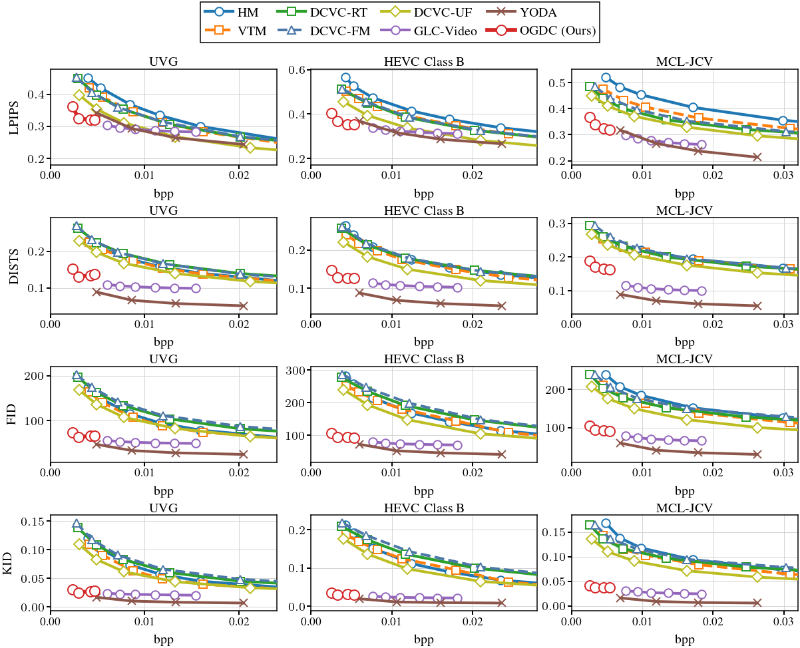

Generative Video Compression via Optimization-Guided Diffusion
Abstract
We present OGDC, a training-free optimization-guided generative diffusion video compression method that operates at a few thousandths of a bit per pixel. A frozen Stable Video Diffusion model reconstructs each 24-frame chunk from four coded components: a generative keyframe, a low-resolution HEVC stream, a band-error header, and noise indices chosen from the source. A dead-zone-gated measurement update keeps HEVC coding error from driving the reconstruction, without modifying the pretrained diffusion model or training a codec.
On the first 96 frames of HEVC Class B, UVG, and MCL-JCV, resized to 1024×576, all four operating points lie below 0.007 bpp. Against VTM-17.0, OGDC gives the largest BD-rate saving on LPIPS and FID for every dataset, and on DISTS for two datasets. It also achieves lower DISTS, LPIPS, and FID than HM and the three evaluated DCVC codecs. Distortion-optimized codecs retain higher PSNR and MS-SSIM.
How OGDC works
OGDC does not train a codec, and it does not update the diffusion weights. The released Stable Video Diffusion prior is the model at test time, on every sequence. DCVC-RT, DCVC-FM, DCVC-UF, YODA, and GLC-Video are trained compression models. OGDC spends its bits on a keyframe, a low-resolution HEVC side stream, a short header, and a set of noise indices, then lets the frozen sampler reconstruct the chunk.
Each 96-frame clip is coded as four chunks of 24 frames. The sampler is started from the keyframe and the upsampled side information. A dead zone stops the measurement update from following HEVC error inside that band, so the update does not paint coding artifacts into the sample. From there, the coded noise selects the residual detail. The diffusion model itself stays the public checkpoint.
Quantitative results
The curves below are the perceptual rate–distortion plots from the paper. Lower LPIPS, DISTS, FID, and KID are better. LPIPS is the VGG network. OGDC's four points sit below 0.007 bpp. On LPIPS it stays below HM, VTM, and the three DCVC codecs. YODA and GLC-Video can record a lower DISTS or FID; those scores are computed on frames.

The table is the BD-rate of those curves against VTM-17.0, in percent. A negative number is a rate saving. N/A means the two curves do not overlap, so a BD-rate is not defined. On UVG DISTS, GLC-Video (−75.69) is slightly ahead of OGDC (−74.34). On HEVC Class B and MCL-JCV, OGDC has no KID overlap with VTM.
| Dataset | Method | DISTS | LPIPS | KID | FID |
|---|---|---|---|---|---|
| UVG | HM | +3.05 | +19.02 | +15.74 | +7.85 |
| DCVC-RT | +23.35 | −0.89 | +32.02 | +35.62 | |
| DCVC-FM | +20.87 | −0.71 | +43.17 | +46.62 | |
| DCVC-UF | −17.56 | −34.56 | −14.83 | −9.12 | |
| GLC-Video | −75.69 | −40.88 | N/A | −73.37 | |
| YODA | N/A | −38.81 | N/A | N/A | |
| OGDC | −74.34 | −71.09 | −87.03 | −79.69 | |
| HEVC Class B | HM | +9.61 | +26.96 | −1.01 | +1.34 |
| DCVC-RT | +10.65 | −3.96 | +30.92 | +24.43 | |
| DCVC-FM | +12.59 | −1.12 | +44.62 | +35.08 | |
| DCVC-UF | −30.34 | −38.83 | −23.86 | −25.54 | |
| GLC-Video | N/A | −50.29 | N/A | N/A | |
| YODA | N/A | −54.89 | N/A | N/A | |
| OGDC | −86.57 | −77.08 | N/A | −88.95 | |
| MCL-JCV | HM | +6.12 | +53.11 | +30.84 | +30.42 |
| DCVC-RT | −0.43 | −30.67 | +8.40 | +1.67 | |
| DCVC-FM | +10.27 | −18.79 | +30.05 | +25.06 | |
| DCVC-UF | −28.29 | −45.45 | −37.67 | −37.06 | |
| GLC-Video | N/A | −80.51 | N/A | N/A | |
| YODA | N/A | −81.28 | N/A | N/A | |
| OGDC | −86.84 | −86.25 | N/A | −93.44 |
Qualitative results
The clips are the first 24 frames. Each panel is one codec, and the label is that codec's bitrate and LPIPS for the whole 96-frame sequence. Lower LPIPS is better. A red number is the lowest bpp or the lowest LPIPS in that clip. Ground truth has no score. The frame box holds every method on that frame, numbered 0 to 23. HM, VTM, and the DCVC codecs tend to keep a smooth picture and lose thin structure. YODA and GLC-Video put texture back. OGDC draws each 24-frame chunk from one frozen diffusion sample, steered by the coded keyframe, the side stream, and the noise indices.